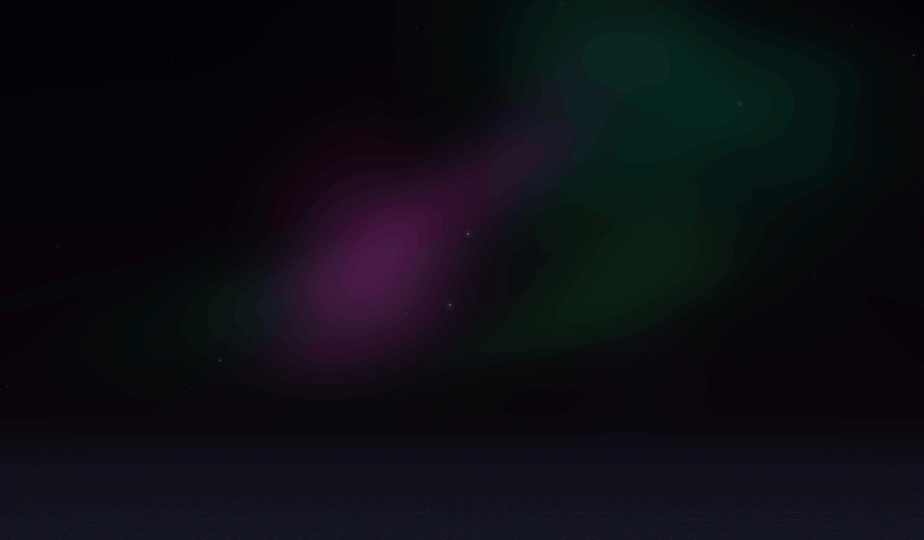
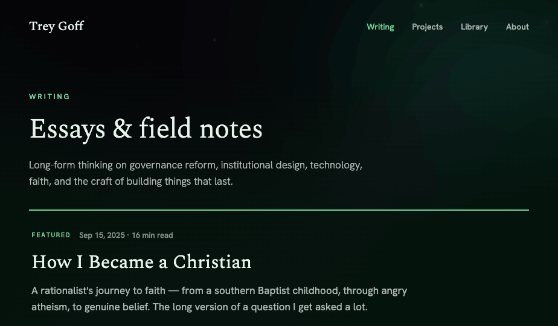
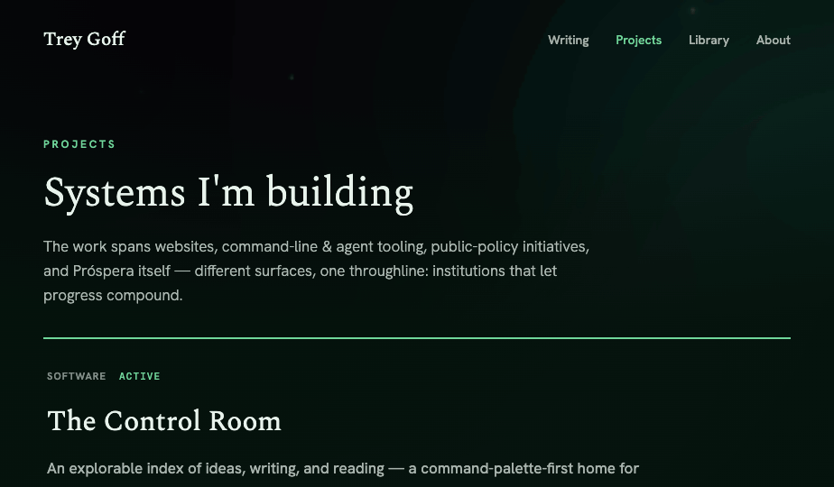
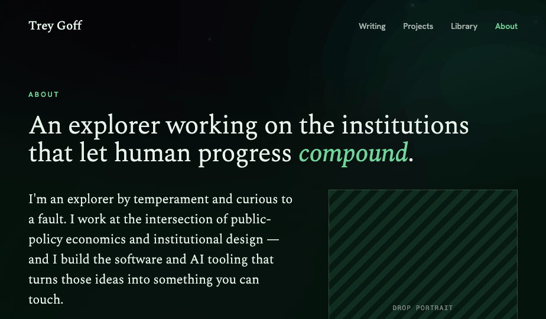

Design Handoff · v1.0 · 2026
Trey Goff.
Personal site — the complete visual specification and build reference for the Aurora-Emerald direction.
5 pages
Aurora-Emerald system
334-book Library
Constellation knowledge-map
The Library — 334 books mapped as a constellation of ideas. The signature page of the site.
01
The System
Color, type, motion, background
02
The Pages
Home, Writing, Projects, About
03
The Library
Constellation + four lenses
04
Build Notes
Data, responsive, a11y
05
Integration
Unifying library + graph
01 · The System
Aurora-Emerald
A near-black emerald ground lit by a living aurora, set in a literary serif. Restrained, nocturnal, and a little cosmic — built so a single accent green carries every interaction.
Core palette
Text tints step down by opacity on the text color: 0.7 secondary · 0.5 tertiary · 0.12 hairlines. Hover surfaces are rgba(232,243,236,0.05).
Library shelf hues · one emerald family, green→cyan
The Library's 12 genre clusters each get a hue in a tight green-to-cyan band so the whole map reads as one organism. Defined in OKLCH — oklch(0.74 0.14 H).
Sci-Fi · 230
Fantasy · 218
Fiction · 205
Science · 196
Self & Growth · 186
Business · 178
Economics · 168
Politics · 158
Philosophy · 148
Religion · 138
History · 128
Lives · 118
Typography
Ag
Spectral
Display & headings. Weights 300 / 400 / 500, italic for emphasis. All H1–H3, the logo, pull-quotes.
Ag
Hanken Grotesk
Body & UI. Weights 300–600. Paragraphs, nav, descriptions, card copy.
Ag
Geist Mono
Labels & data. Eyebrows (0.2em, uppercase), stats, button text, ratings, dates, metadata.
H1 clamp(38–76px) · Spectral 300
H2 clamp(28–50px) · Spectral 300
Body 14–20px · Hanken 300–400
Eyebrow 12px · 0.2em · Mono 600

The aurora background
A full-screen WebGL shader (7 drifting aurora ribbons + starfield), shifted into the emerald family with hue-rotate(14deg) saturate(1.45) brightness(0.92) and dimmed under a radial vignette so text stays legible. Fixed behind every page. Honors prefers-reduced-motion (freezes).
Motion
Entrance — content rises 16px + fades in, cubic-bezier(0.16,1,0.3,1), 0.8–1s, on hero load.
Hover — links shift to accent; rows wash to 5% surface; 0.15–0.2s ease.
Constellation — stars twinkle (out-of-phase sine), spring zoom/pan, books lift on the shelf.
02 · The Pages
Five screens, one language
Each page pairs a generous serif header (eyebrow → headline → standfirst) with quiet, hairline-ruled index rows. Desktop captures at full width; mobile at 402px.
/
Home
Centered hero · four-paths index · selected work · featured essays
/writing
Writing
Featured essay · chronological index with read-time
treygoff.com/writing

/projects
Projects
Featured project · categorized work index with status
treygoff.com/projects

/about
About
Bio prose + sticky sidebar (role / roots / faith / links + portrait slot)
treygoff.com/about

Note — the hatched “Drop portrait” box is an intentional image slot awaiting Trey's photo.
03 · The Library
One collection, four lenses
The same 334 books re-rendered four ways, switchable from a pinned bottom bar. A category filter and a click-through detail drawer tie all four together. The Constellation is the headline; the others are calmer ways in.
Constellation — how it's built
1 · Genre clusters on a kinship ring
12 shelves (consolidated from 33 raw genres) sit evenly around a circle (R≈560). Order is by intellectual kinship so neighbours share readers, closed as a loop: scifi → science → growth → business → econ → politics → phil → religion → history → lives → fiction → fantasy → (back to scifi).
2 · Phyllotaxis packing, best to the core
Within each cluster, books pack in a sunflower spiral (golden angle). The most thematically-connected books are pulled to the bright centre; the rest drift to the rim — so each shelf has a glowing heart.
3 · Topic threads
Two books are linked when they share a specific topic (any topic on ≤24 books — broader ones are basically the genre and are skipped). Bright threads chain these across the map, so ideas visibly bridge shelves. Faint intra-cluster lines add constellation texture.
4 · Encoding & interaction
Colour = shelf hue · size + brightness = topic-centrality (how connected) · twinkle = per-star sine. Fit-to-screen on load; scroll-zoom to cursor; drag-pan; hover label; click → detail drawer; the category filter dims everything off-theme.
Rendered on a single <canvas> with a requestAnimationFrame loop plus a setInterval watchdog (guarantees paint even when the tab/iframe is backgrounded). OKLCH cluster colours are converted to RGB in JS for canvas (canvas gradients don't accept oklch()).
The Shelf
A CSS spine wall — vertical titles, hue per shelf, sortable by shelf / colour / threads / recency / height / author. Hover lifts a book out.
The River
Every book as a tick along a timeline of publication year (ancient → present); taller tick = more idea-threads. The density tells a reading story.
The Index
The restrained option — a sortable typographic ledger: №, title / author, shelf, primary topic, year. The confident, scannable fallback.
Data model
// library-data.js — one record per book
{
id: "seeing-like-a-state",
t: "Seeing Like a State",
a: "James C. Scott",
y: 1998, // year published
c: "politics", // shelf / cluster
tp: ["governance","planning",…],
r: 5, // rating (optional)
k: "Essential…" // blurb (optional)
}
Generated from the live content/library/books.json (334 titles). Two transforms run at build:
→ shelf 33 raw genres collapse into 12 clusters; the 15 ambiguous “non-fiction” books are routed to a shelf by their topics.
→ topics drive the constellation's threads, centrality, sizing and the detail-drawer chips — the richest signal in the data.
04 · Build Notes
Taking it to production
Data realities
Ratings exist on only 8 of 334 books, and there are no read-dates — so encodings deliberately avoid rating (size/centrality use the topic graph) and the River uses publication year. As Trey adds ratings, dates and blurbs, the same fields light up automatically. A 9-blurb “Marginalia” lens is built but hidden until there are enough notes.
Responsive
Layouts are fluid (clamp + flex-wrap) and reflow cleanly to 402px. One production to-do: the nav currently wraps to a second row on phones — swap it for a proper menu / hamburger. The constellation is already touch-enabled (pinch-zoom, drag-pan).
Fit into the existing app
The production site (Next.js) already ships a /library and a /graph. Decision to make: does the Constellation replace the current library view, or become a new lens beside the existing shelf/stack UI? It shares the graph's worldview, so unifying them is the natural move.
Performance & a11y
The aurora is one WebGL quad and freezes under prefers-reduced-motion; consider a static gradient fallback for low-power devices. The constellation is a single canvas, comfortable at 334 nodes. Provide a text/list equivalent (the Index lens already serves this) for screen readers.
05 · Integration
Unifying with /library & /graph
The Constellation is at once a library view and a knowledge graph — so it lands across two systems the production site already ships. The plan: one shared graph engine, one library lens-switcher, one detail panel. Nothing built twice.
A · Rationalize the views into one lens-switcher
Exists todayBecomesAction
— new —→Constellation · heroADD
StackLibrary→ShelfREPLACE
LibraryClient grid + covers→Index · covers move to detailREPLACE
— new —→RiverADD
ReadingStatsCharts→Stats · optional 5th lensKEEP
FloatingLibrary (3D)→demote to easter eggRETIRE
B · The Constellation ↔ Graph boundary
/graph · the everything-map
Stays the all-content knowledge graph — essays + notes + books — powered by generateGraphData(), GraphCanvas and NodeInspector.
/library Constellation · the books slice
The books-only subgraph of that same engine, re-laid-out into genre clusters with topic threads. Same data, same inspector — a focused framing, not a second graph.
One graph core · two framings. The library never reimplements the graph.
C · What to reuse
ADAPTgenerateGraphData / GraphCanvas — feed the books subgraph + cluster layout.
MERGENodeInspector + BookDetail → one unified detail panel.
REUSEbook-colors.json / cover-map.json — covers in detail; optional star tint.
REUSELibraryFilters — wire to the shared category / topic filter.
D · One detail panel, both worlds
From production
Cover image
Author · year · ISBN
Rating
Buy / Goodreads links
From the redesign
Shelf chip + hue
Topic chips
Kindred / threads count
“See the shelf →”
→ Unified BookDetail
Cover + shelf hue header → title, author, year → rating or kindred-reads → topic chips → blurb → buy links + “See the shelf”. One panel, opened from every lens and from a graph node.
Open decisions to confirm before build: covers in detail only vs. also tinting Constellation stars · whether /graph keeps its own page or becomes a lens too. Recommendation baked in above — detail-only covers, /graph stays its own page.
Deliverables
Trey Goff - Home.dc.html · centered hero + index
Writing.dc.html · Projects.dc.html · About.dc.html · sub-pages
Library.dc.html · constellation + shelf + river + index
library-data.js · 334 books, build-ready schema
static/aurora-veil.html · WebGL background
handoff/shots/ · desktop + mobile reference captures
The shelf is never finished — new books join the constellation as he reads them.
Trey Goff · Aurora-Emerald · 2026